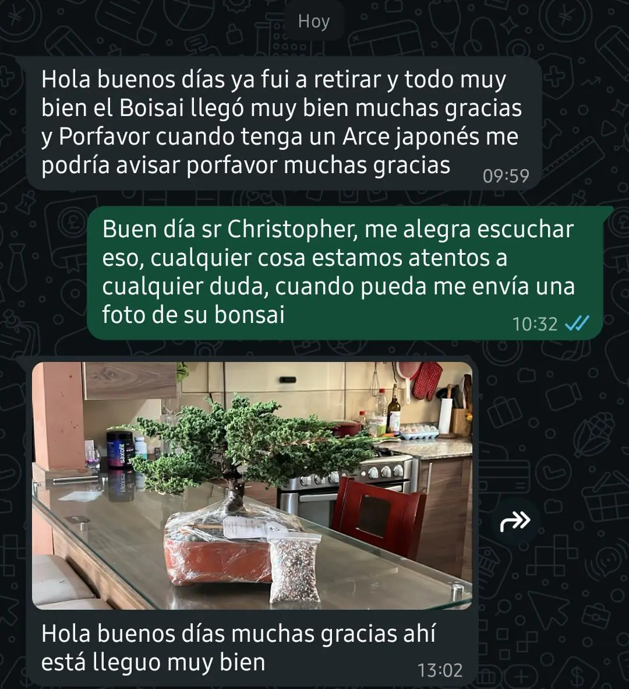
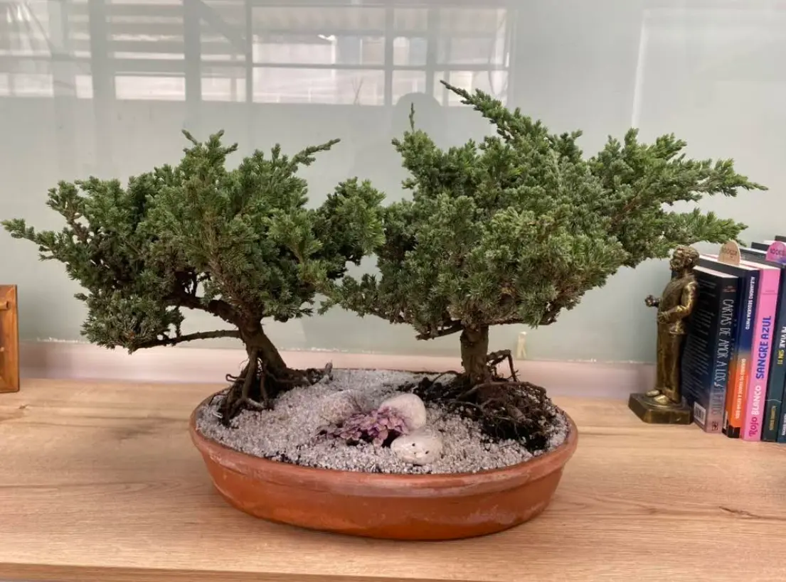

“¿Y si se me muere?”
Es lo primero que piensa casi todo el que quiere un bonsái. Y es una duda justa: es un árbol vivo, no un adorno.
Por eso no te vendo solo la planta. Un bonsái vivo no viene con manual, viene con alguien al otro lado del mensaje que te enseña a cuidarlo, paso a paso, hasta que ya no necesites preguntar.
No es una maceta. Es un acompañamiento.
Cada pedido incluye todo lo necesario para que tu bonsái llegue vivo, se quede sano, y tengas a alguien que te enseñe a cuidarlo mientras aprendes.
Tu bonsái, sano y listo
Ficha de cuidado de tu especie
Garantía de supervivencia
Soporte por WhatsApp · 30 días
Kit de cuidado
De la duda a tu árbol, en tres pasos.
Eliges tu bonsái
Míralos en el catálogo de abajo. Cuando veas el que te gusta, tocas “Lo quiero” y me llega tu mensaje con el nombre del árbol. Yo te lo aparto.
Te llega sano
Empacado para viajar sin sufrir, con su ficha de cuidado adentro. Envíos a todo el Ecuador o retiro aquí en Ibarra.
Te acompaño
Los primeros 30 días me tienes a un mensaje de distancia. Cualquier duda, foto o susto: lo resolvemos juntos.
Elige el tuyo. Te lo aparto hoy.
Cada bonsái es una pieza única y sale directo del vivero en San Antonio de Ibarra. Toca “Lo quiero” en el que te guste y me llega tu mensaje con el nombre del árbol — con ficha, garantía y acompañamiento incluidos. Los precios no incluyen envío; te lo cotizo según tu ciudad.
¿No ves la especie que buscas? Escríbeme y te la consigo →
Llegaron sanos. Siguen vivos.


Lo que todos preguntan.
No sé nada de plantas. ¿Igual puedo?
Sí, y de hecho la mayoría de mis clientes empezó justo ahí. Para eso existe la ficha de cuidado y el soporte de 30 días: te digo exactamente cuánta agua, cuánta luz y cuándo. No necesitas experiencia, necesitas que alguien te guíe — y esa es la parte que yo pongo.
¿Cómo pido un bonsái del catálogo?
Muy fácil: mira el catálogo, toca “Lo quiero” en el árbol que te gustó y se abre WhatsApp con el mensaje ya escrito y el nombre del bonsái. Me llega, te confirmo disponibilidad, coordinamos pago y envío. Mientras tanto te lo aparto.
¿Cómo llega si vivo en otra ciudad?
Empaco cada árbol para que viaje sin estresarse y coordino el envío a todo el Ecuador. Te aviso cuándo sale y cuándo llega. Si prefieres, también puedes retirarlo aquí en San Antonio de Ibarra.
¿La garantía es real?
Real. Si el árbol llega dañado o no supera sus primeros días siguiendo la ficha de cuidado, te lo repongo. No te vendo un árbol y desaparezco: mi negocio depende de que el tuyo viva.
¿Cuánto cuesta?
El precio de cada bonsái está en su tarjeta del catálogo. Los de entrada son más accesibles e incluyen ficha, garantía y soporte; los de colección son piezas únicas con años de formación. Si tienes un presupuesto en mente, escríbeme y te muestro opciones.
¿Cuánto tiempo me quita al día?
Menos del que imaginas: un bonsái sano necesita minutos, no horas. Riego según su especie, buena luz y una revisada. Todo eso está en tu ficha, y cualquier duda me la consultas.
¿Cómo cuido mi bonsái cuando llegue?
Cada árbol trae su ficha de cuidado específica: cuánta agua, cuánta luz y cada cuánto revisarlo, según su especie. No es un instructivo genérico — es la guía exacta para el bonsái que elegiste. Y si algo no cuadra con lo que ves, me escribes por WhatsApp durante tus primeros 30 días y lo resolvemos juntos, con foto si hace falta.
Cuéntame para quién es y te ayudo a elegirlo.
Un mensaje y arrancamos. Sin compromiso: primero te recomiendo el árbol correcto, después decides.
Escríbeme por WhatsApp